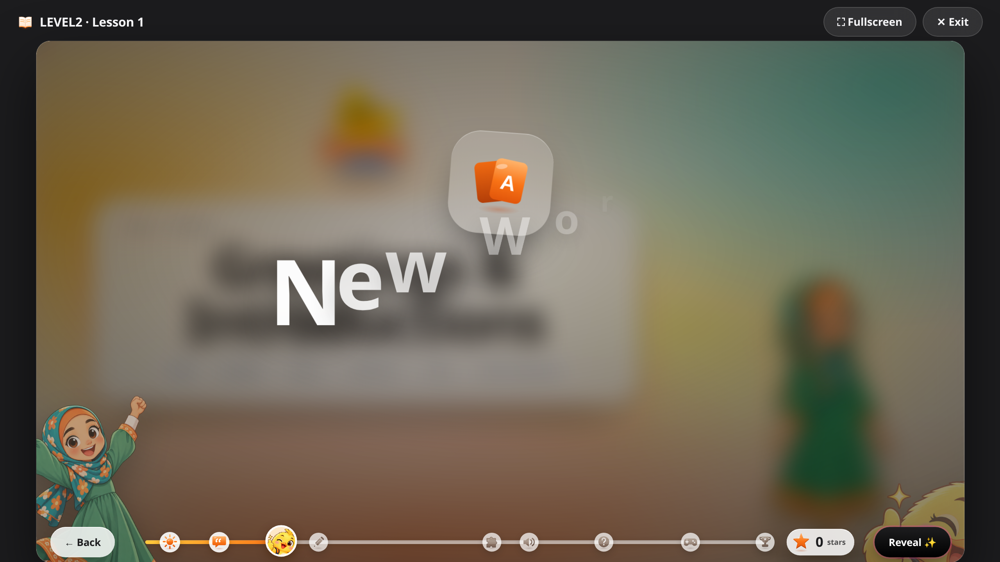

The world widens here: extended family, telling time, daily routines morning and night, and the first steps into pointing things out with this/that/these/those.
By the end of this level, your child can:
- Greet people and introduce themselves properly
- Name extended family (aunt, uncle, cousin)
- Use he/she and possessives (my, your, his, her, our, their)
- Follow classroom commands and count to 100
- Name the months and tell the time
- Describe their daily morning and evening routine
- Point things out with this/that/these/those
- Make plurals correctly (s/es)
Sample vocabulary
birthdayعيد الميلادauntعمة / خالةcousinابن العم / الخالclassroomالفصل الدراسيguestضيفafternoonبعد الظهرhomeworkواجب منزليbreakfastالفطور
Grammar
Possessives and he/she, classroom commands, telling time, this/that/these/those and plurals -- each introduced through the lesson's own sentences and practiced in class. The Grammar Hub with formal rules opens in Level 3.

A real vocabulary slide from Lesson 1 — picture, Arabic, example sentence and audio